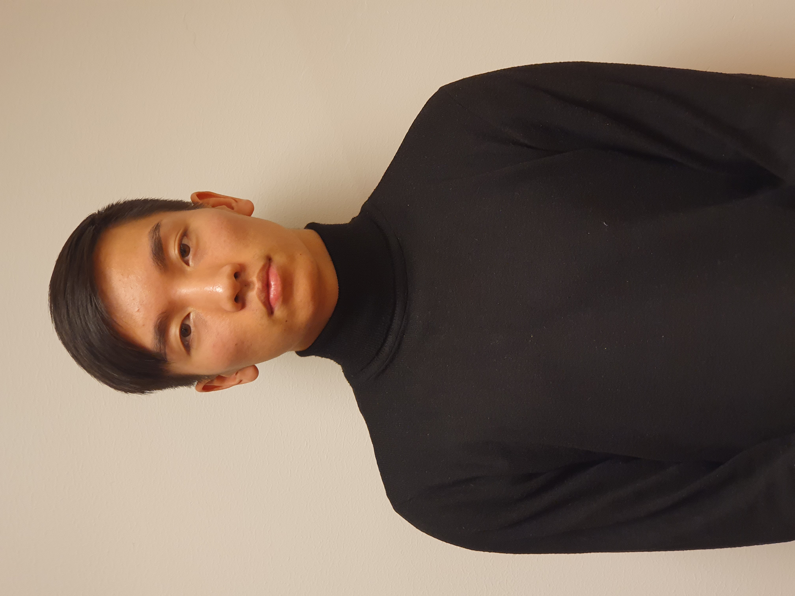
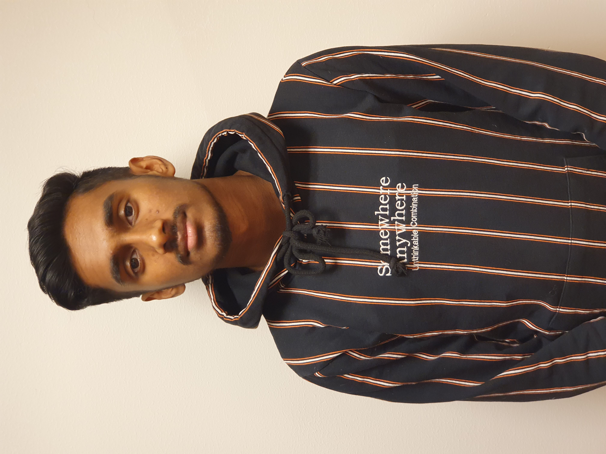
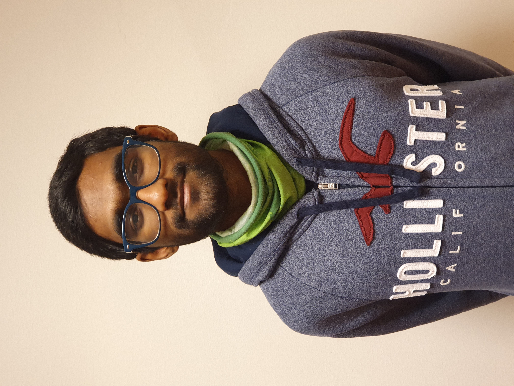

About us
Kisan Srirangan
Chief Executive Officer

Kisan Srirangan's works in the technology and environmental projects, as well as the good leadership skills he has, makes him the CEO of Green Routine. After a master's degree in computer science at OsloMet - Metropolitan University, he got a job as a programmer. In addition, Srirangan is an environmental activist and is among other things concerned about recycling. With his visionary qualities, he has managed to come up with an idea of how humans can help make nature a better place.
Khalid Ahmed Farah
Chief Operating Officer

Khalid Farah is a hardworking and conscientious Vice President. Farah is very socially engaged and has good knowledge of organizational life. His good qualities in operations and management, in addition to counseling and conflict resolution, makes Green Routine ranked high among the most popular environmental apps in Norway today.
Lars Robertbuell
Chief Product Officer

Lars Robertbuell is very young and graduated recently with a specialization in marketing. His qualities in concept development and remarkable innovations with environmental works, led Green Routine to sign this man. In addition, Robertbuell has a good understanding of finance and a creative mind. His creative ideas have contributed a lot to the Green Routine team and with his very sensible input, makes him the right man in this position.
Miriam Chaib
Chief Technology Officer

Miriam Chaib is a civil engineer in the field of construction and engineering at OsloMet and is described as a determined, orderly and cooperative person. Chaib signed with Green Routine long before she graduated because of her good skills in mechanics and design. The concepts she presented were very similar to what Green Routine was looking for, and made her get her position as technical director immediately.
Dani Tran
Chief Marketing Officer
Dani Tran holds a master's degree in digital marketing. He already saw during the study that technology and communication are becoming increasingly intertwined. He is very concerned about how this interaction is changing and kept up to date with the new market channels. Tran signed a contract with an employer even before he delivered the exam. With his skills and experience, he is the right man in this position. His marketing skills have made Green Routine well known in the municipality of Oslo, as well as other nearby municipalities. Thanks to Tran, the Green Routine will soon be expanded to other municipalities and after that, to other countries.
Abisan Ganeshu
Chief Financial Officer
Abisan Ganeshu studied MBA at BI and has for several years worked as a chief financial officer at DNB and is described as a person with strong analytical skills, strategic and broad financial experience. Ganeshu did not particularly like his earlier workplaces. With Green Routine, one of his greatest wishes was fulfilled; to work on reducing environmental pressures. Therefore, Green Routine is a perfect workplace for Ganeshu.
Arron Albert
Chief Commercial Officer
Arron Albert is very young and graduated in administration and management. Despite the fact that Green Routine had several interesting and more experienced candidates for the position, they chose to go for Albert because of his thoughts and ideas in the environment, especially recycling. These factors made him the right man in this position.
If you want to contact us, or want to be a part of our team, send us an e-mail HERE.